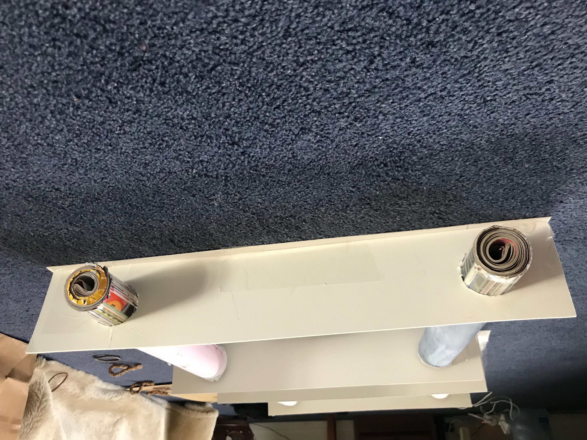
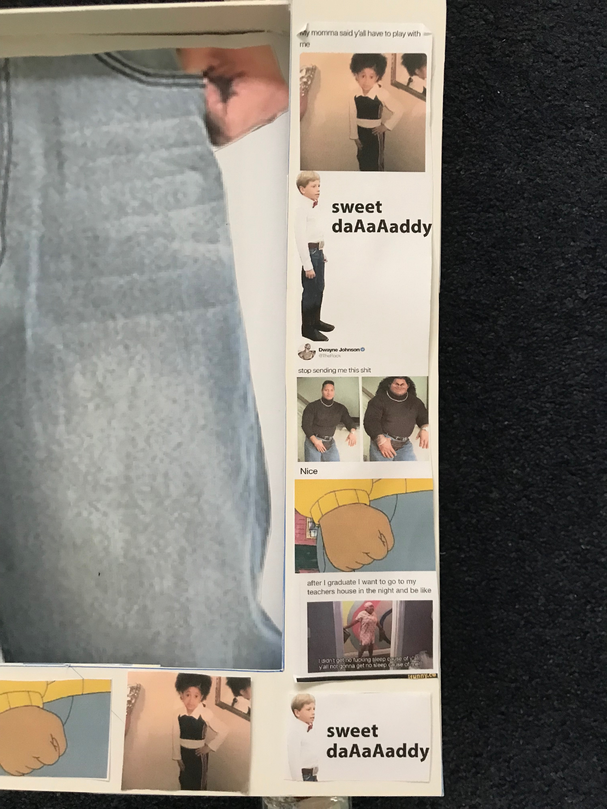

Online Meme-fit Planner

Create an outfit using the style found within the most iconic memes!! Feel free to mix 'n match or recreate the meme looks.
My initial idea for this project was to create a video that advertises and demonstrates my website "Webdrobe" (from p3) to show users how the app can be used and how they can navigate through the website. Along with this, I also planned to add in the fourth page to the "Webdrobe" website which is the "Stylebook", a page where users can plan their future outfits through mixing and matching items from their online closet to see how they would look together (as shown on my wireframe-from project2, on the right).
However, upon reading the brief for project 4, I've realised that we had to create a physical rendition of something from the internet and present it in class, in a Yami Ichi inspired environment. Therefore, instead of creating the video and the 4th page of my website online, I decided to make a physical "Outfit Planner" out of cardboard, magazines and paper. I intended to mostly focus on tops and bottoms, just like the digital version shown above (Online-Planner)
The idea of incorporating memes into this project didn't come up until I was planning the "tops" and "bottoms" that I was going to use/print out for the outfit planner. Seeing as the project brief stated that the task could be creating a physical rendition of a meme(s), I then began researching the most popular memes and took note of the style and outfits being worn within them. After this, I then choses the outfits that people would recognise the most and would possibly actually wear so I then went ahead and recreated the looks and separated the tops and bottoms worn from the memes.
I think that this idea represents the Internet Yami Ichi more rather than my previous idea of creating a videe because I have taken an aspect from my own website in project 3, and put it to life, where meme outfits can be presented within it. I also feel that incorporating memes overall, really expresses the internet culture in the physical world, which is what Yami Ichi is all about.
STEP ONE:
As stated in my ideation, I gathered the most "well-known" outfits from memes. I decided to only do 5 outfits and thus 5 memes:
STEP TWO:
I then recreated these outfits by finding a more modern version of them, printed them out and then cut them. (They printed out way bigger than I expected hence why my final product is quite big):
STEP THREE:
When printed, I created a long sheet of paper and stuck the outfits on, making sure to leave gaps in between:
STEP FOUR:
Once the sheet of tops and bottoms were made, I then created rollers from taping magazines into a tube tape-as shown below. After this, I taped the ends of the sheets to the magazine roller and rolled up the sheet so that only one piece of clothing is showing:
STEP FIVE:
Up next was creating the holder for the rolls. I first measured how far away they have to be to fully show one piece of garment, then I used 4 pieces of cardboard and cut out the necessary holes. After this, I then put the rollers into my DIY holders (See below), to keep the cardboard in place, I also added hairties at each end of the cardboard.
STEP SIX:
Last step was to create the border and stick the inspired memes to it, along with the title board;
